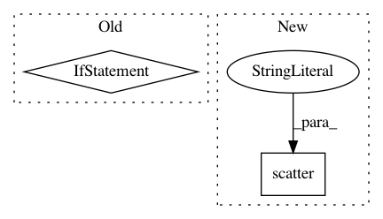

f8a55bfe352901533595dfd1a36e51cfc0092e42,torch_geometric/utils/to_dense_adj.py,,to_dense_adj,#Any#Any#Any#Any#,5
Before Change
edge_index_1 = edge_index[0] - cum_nodes[batch][edge_index[0]]
edge_index_2 = edge_index[1] - cum_nodes[batch][edge_index[1]]
if edge_attr is None:
adj[edge_index_0, edge_index_1, edge_index_2] = 1
else:
adj[edge_index_0, edge_index_1, edge_index_2] = edge_attr
return adj
After Change
flattened_size = batch_size * max_num_nodes * max_num_nodes
adj = adj.view([flattened_size] + list(adj.size())[3:])
idx = idx0 * max_num_nodes * max_num_nodes + idx1 * max_num_nodes + idx2
scatter(edge_attr, idx, dim=0, out=adj, reduce="add")
adj = adj.view(size)
return adj
In pattern: SUPERPATTERN
Frequency: 3
Non-data size: 2
Instances
Project Name: rusty1s/pytorch_geometric
Commit Name: f8a55bfe352901533595dfd1a36e51cfc0092e42
Time: 2020-06-24
Author: matthias.fey@tu-dortmund.de
File Name: torch_geometric/utils/to_dense_adj.py
Class Name:
Method Name: to_dense_adj
Project Name: scikit-learn-contrib/imbalanced-learn
Commit Name: 153f6e0ff5729fc22b68d5f6e0fd05edf96d8c2c
Time: 2019-11-17
Author: g.lemaitre58@gmail.com
File Name: examples/datasets/plot_make_imbalance.py
Class Name:
Method Name:
Project Name: rusty1s/pytorch_geometric
Commit Name: a27d95173d560a536480ef86ce18640bb6ee95b8
Time: 2021-01-14
Author: matthias.fey@tu-dortmund.de
File Name: torch_geometric/utils/softmax.py
Class Name:
Method Name: softmax